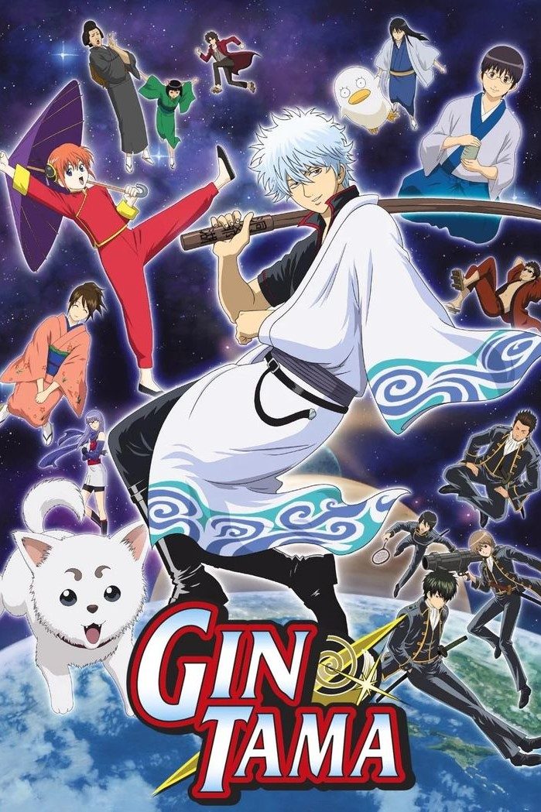
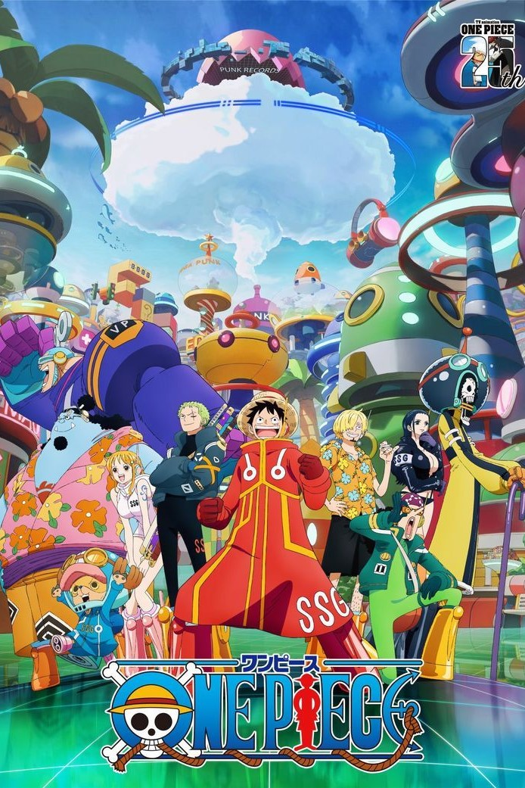
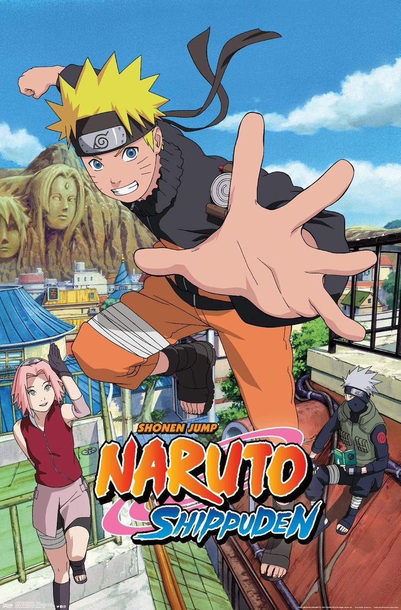
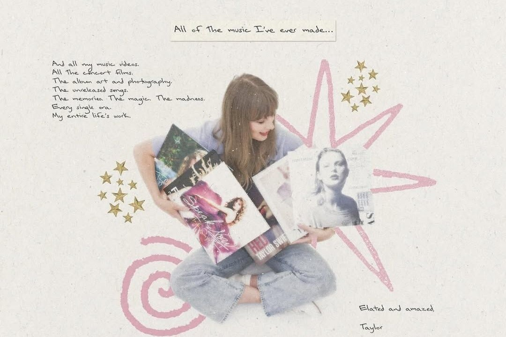
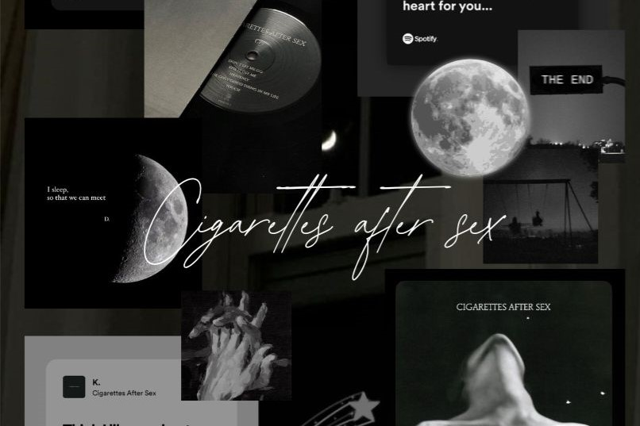
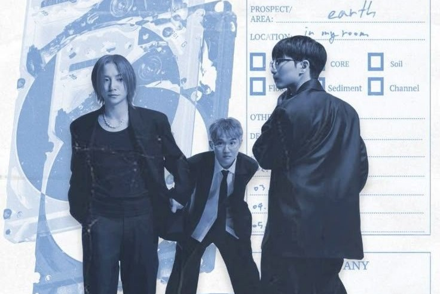
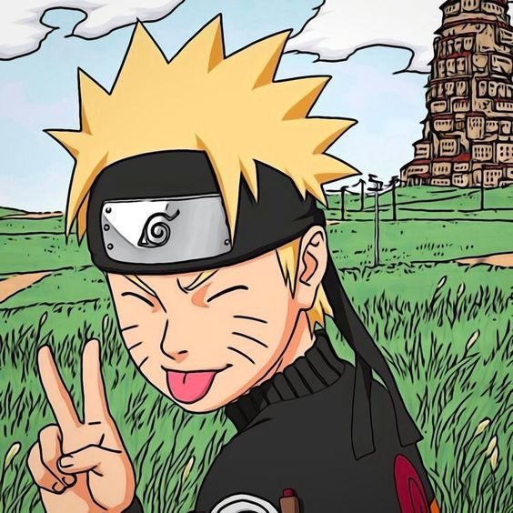
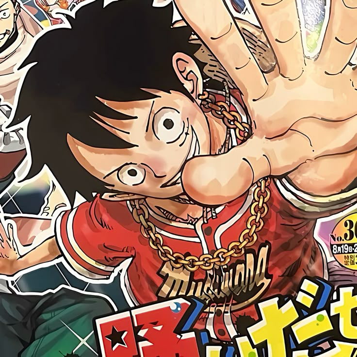

Hi! I’m Alli, a passionate Web Developer and Graphic Designer dedicated to creating beautiful and functional
digital experiences.
I love combining creativity with technology to build projects that not only look great
but
also solve real-world problems.
When I’m not coding/designing/writing, you’ll find me exploring new tech
trends,
learning new skills, or enjoying watching k-dramas or anime.
Welcome to my personal corner of the web — feel
free to get to know me and get in touch!
Hi! I’m Alliahna Ira Maravilla, currently pursuing a Bachelor of Science in Information Technology at the Batangas State University - Lipa Campus, under the CSIS Department. I’m passionate about technology and eager to develop innovative solutions through programming, networking, and system analysis. As a student, I’m constantly learning new skills and staying updated with the latest trends in IT. Welcome to my personal website — feel free to explore my projects and connect with me!
an 18-year-old female ISTP currently in my first year of college, pursuing a Bachelor of Science in Information Technology at the Batangas State University CSIS Department. Born on November 11, 2006, under the Scorpio zodiac sign, I’m known for being independent, practical, and curious—traits that help me thrive in both my studies and everyday life. I’m 4'7" tall and bring a jolly, easygoing vibe wherever I go. I enjoy hanging out with friends, always keeping things light and fun, but I also appreciate moments of zoning out and reflecting quietly. I’m excited about the journey ahead and eager to grow my skills in the tech world.
People often describe me as jolly and cheerful — I’m always happy and enjoy spending time with friends. Sometimes, I like to zone out and reflect quietly, which helps me recharge and stay creative. Back in senior high school, I loved making memories with friends and embracing every moment with positivity. lively moments full of laughter and fun with the people I care about. This balance keeps me grounded and energized.
I’m really into watching K-dramas and anime — they’re my go-to for entertainment and inspiration. I also love reading manhwa, manhua, and other comics, which definitely feeds my nerdy side. Aside from that, I’m passionate about photography, especially using digital cameras to capture special moments and create lasting memories. Combining my love for stories and visuals makes my free time both fun and meaningful.
I’ve always loved watching anime — it’s more than just a hobby for me; it’s an escape into beautifully crafted worlds filled with emotion, imagination, and meaning. Whether it’s a heartfelt slice-of-life, a thrilling action series, or a mind-bending psychological story, anime has a unique way of blending art and storytelling that really speaks to me. I enjoy seeing how each series reflects different cultures, values, and perspectives while still connecting with universal emotions like friendship, loss, determination, and growth. It’s not just about entertainment — it’s about getting lost in stories that make you think, feel, and sometimes even cry a little. Anime has become one of my favorite ways to relax, reflect, and get inspired.




“Everything Has Changed” is about the soft, tender moment when you meet someone and your whole world feels different — warmer, safer, and full of possibility. It’s about love as a quiet transformation, not a loud declaration.

“Sesame Syrup” is about a love that feels deeper than anything before. It's about accepting each other’s pasts, cherishing quiet intimacy, and holding onto a rare emotional connection that lingers — sweet, like syrup; rare, like sesame.

At its core, the song "Love" reflects themes of melancholy, longing, and emotional vulnerability in relationships. The lyrics express a deep and personal kind of love — not necessarily romantic in the traditional sense, but rather gentle, raw, and introspective.
Quotes capture powerful thoughts, emotions, or ideas in just a few words. They can inspire, comfort, motivate, or even challenge us to see things from a new perspective. Whether from a book, a movie, or someone's personal wisdom, quotes serve as reminders of what matters — helping us express feelings we sometimes can’t put into words ourselves.

If you don't like your destiny, don't accept it. Instead, have the courage to change it the way you want it to be.

If you don't take risks, you can't create a future!